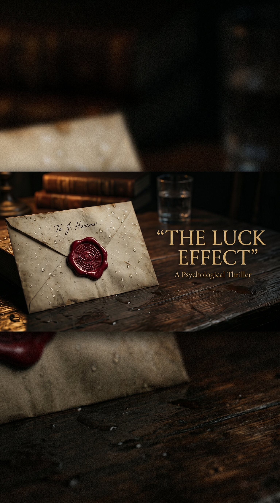

מי שידיו פתוחות בערב גשום אחד —
הוא היחיד שיוכל להחזיק את הסוד.
ד"ר אדם בן-ארי היה חוקר בנוירוביולוגיה התנהגותית במכון ויצמן — עד שהסטודנט שלו גנב את המחקר שלו, ובלילה אחד הוא איבד את הכל: העבודה, הנישואים, הזהות.
שלוש שנים מאוחר יותר הוא מכין אספרסו ברחוב עמק רפאים, ירושלים. בלילה גשום אחד בנובמבר, לקוחה אחרונה נכנסת לבית הקפה — ומשנה את הכל.
מכתב אנונימי. מוזיאון ישראל. מגילות מדברי יהודה. וגילוי שהמקריות שחייתה אותו — לא הייתה מקרית מעולם.

קרא/י את הפרק הראשון במלואו — ישירות כאן
גשם של ירושלים אינו כמו הגשם של תל אביב.
הוא לא יורד — הוא נופל. כבד, אנכי, מצלצל על אבן ירושלמית כמו מטבעות. בערבי נובמבר, כשהאוויר ההררי קרוב לאפס מעלות, הוא הופך לקרח דקיק שמכסה את המדרכות במושבה הגרמנית בשכבה זוהרת תחת הפנסים הצהובים.
אדם בן־ארי עמד מאחורי הדלפק של "ארומה קטן", הקפה הקטן ברחוב עמק רפאים, וניגב כוס בית קפה במגבת לבנה. השעה הייתה תשע וחצי בערב. עוד עשרים דקות לסגירה. בחוץ, השמיים השחורים שפכו מים מאז שש.
הוא היה לבד. מירב, המנהלת, יצאה כבר ב-21:00 לפגוש את החבר שלה. דניאל, הברמן השני, חלה. אדם נשאר עד הסגירה.
זה היה נוח לו ככה. בשקט.
האור בבית הקפה היה תמיד עמום מעט מדי — סגנון שמירב התעקשה עליו. "אווירה", היא קראה לזה. אדם קרא לזה: לקוחות שלא רואים אם הכוס נקייה. אבל בשעה הזאת, עם הגשם בחוץ והאינסטרומנטל הסקנדינבי הרך ברדיו, הוא הבין. האווירה הזאת — היא ששמרה אותו פיכח.
לפני שלוש שנים, באותו חודש בדיוק, ד"ר אדם בן־ארי, חוקר במעבדה לנוירוביולוגיה התנהגותית במכון ויצמן, חתם על מסמכי הפיטורים שלו במשרד הדקאן של הפקולטה.
שלוש שנים של מחקר — על האופן שבו מערכת הדופמין במוח האנושי מעבדת אירועים מקריים — נעלמו במהלך שלושה ימים. הקובץ נעלם מהשרת. הגיבויים נעלמו עם הקובץ.
הסטודנט שלו, יואב, נעלם עם הגיבויים — ברח לקליפורניה, התקבל למעבדה של פרופ' אמריקאי, ופרסם את התוצאות שישה חודשים אחר כך תחת שמו.
אדם לא יכול היה להוכיח כלום. לא היה לו אפילו על מה לבנות תביעה. הוא קם בבוקר אחד, נסע למכון, גילה שהמרצע אבד — ובערב הוא כבר היה מובטל.
אשתו, רוני, החזיקה מעמד שמונה חודשים. אחר כך היא הלכה. הוא לא האשים אותה. הוא היה אדם אחר באותם החודשים. צל של עצמו. ישן ביום, ער בלילה, מסתכל בתקרה ומדבר עם עצמו על מה הוא היה צריך לעשות אחרת.
החזיר אותו לכאן רק הצורך הפשוט לאכול. ואדם אהב קפה. אדם תמיד אהב קפה.
כך, בשנה הראשונה של חייו החדשים, הוא הפך מחוקר של מערכות תגמול במוח — לאיש שמכין אספרסו לרגליים העייפות של תושבי טלביה.
הוא ניגב את הכוס האחרונה והניח אותה במגרעת המעוצבת בעץ. הסתכל החוצה דרך החלון.
רחוב עמק רפאים היה ריק כמעט. רק אישה אחת עמדה מתחת לחופה של חנות הספרים הסגורה ממול, מסתכלת אל חלון הראווה כאילו השלטים בעברית הם תעלומה מרתקת.
היא חצתה את הרחוב.
הדלת של הקפה נפתחה והכניסה איתה את ריח הגשם הירושלמי — האבן הרטובה, האורן, הקור.
אישה קטנה, מבוגרת, יפנית.
זה מה שאדם זיהה ברגע הראשון. היא נראתה כבת שבעים, אולי מעט יותר. שיערה הלבן היה אסוף בקפידה לתוך פקעת נמוכה. היא לבשה מעיל ארוך שחור, חולצה לבנה שצווארונה הגיע עד מתחת לסנטר. בידה — מטרייה שחורה דקה, סגורה, רטובה.
היא טפטפה.
"סליחה", היא אמרה בעברית, נקייה אבל מלוטשת באקסנט יפני רך. "אפשר עוד?"
"בטח", אמר אדם. "אנחנו סוגרים בעוד עשרים דקות, אבל יש לך זמן".
"תודה".
היא ניגשה לדלפק. לא ישבה. הביטה בלוח התפריט מעליו.
"יש לכם תה?"
"כן", אמר אדם. "תה ירוק, תה שחור, תה אנגלי, תה — "
"ה'גנמאיצ'?"
הוא עצר. "סליחה?"
"ה'גנמאיצ'. תה ירוק עם אורז קלוי. אני יודעת — לא מצוי בארץ. אבל לפעמים יש אנשים שמחזיקים".
"אין לי", אמר אדם, "אבל יש לי תה ירוק רגיל של טווינינגס. עם או בלי דבש".
היא חייכה. חיוך קטן. לא של אכזבה — של הבנה. כמו מי שכבר ביקש דברים מוזרים בארץ זרה הרבה פעמים, וכבר למד לא לצפות יותר מדי.
"תה ירוק. עם דבש. תודה".
הוא הניח את הקנקנית עם המים על הכיריים והפנה אליה את גבו. הוציא שקית תה. הוציא קופסת דבש. הסתכל עליה דרך השתקפותה בחלון.
היא הסתובבה אט־אט, סקרה את בית הקפה. שלושה שולחנות פנימיים, שני שולחנות ליד החלון. רק שולחן אחד היה תפוס — סטודנטית עם מחשב נייד וזוג אוזניות, ראשה בידיה, רכונה לבוחן. השאר ריק.
האישה בחרה את השולחן הכי רחוק מהדלת. בפינה. גב לקיר.
אדם הבחין בזה ולא הבחין בזה בו זמנית.
הוא הביא את התה. הניח אותו לפניה. "צריכה עוד משהו?"
היא הביטה בו רגע אחד יותר מדי. עיניים חומות, בהירות באופן מוזר. לא היו עיניים של אישה בת שבעים. הן היו עיניים של מישהי שלא ישנה כבר זמן רב.
"לא", היא אמרה. "תודה".
הוא חזר אל הדלפק. המשיך לנגב כוסות.
עשר דקות חלפו.
האישה הוציאה מתוך מעילה מחברת קטנה, עטופה בעור חום. פתחה אותה במחציתה.
הוציאה עט נובע. התחילה לכתוב.
אדם, מאחורי הדלפק, הסתכל עליה מבלי להסתכל. הרגל ישן של מדען — לראות מבלי להפנות את הראש. היא כתבה בקצב יציב, לא ממהר. לפעמים השתהתה רגע, הביטה בחלון, חזרה לכתוב.
כתב היד שלה, ממה שאדם הצליח לראות, היה צעיר. כתב יד של מישהי בת שלושים, לא בת שבעים.
ובכתב שלה — לפעמים תווים סיניים, לפעמים יפניים. אבל גם — לפעמים — מילים בעברית.
ועצר את עצמו.
הוא ראה את המילה "אדם"
לא, חשב. זאת לא הכוונה אליי. זה השם של הראשון. או הכינוי. או משהו אחר.
וגם את המילה "סוף"
ואז הוא ראה גם את המילה "ירושלים"
הסטודנטית קמה ויצאה. בית הקפה נשאר רק שניהם בו.
האישה הניחה את העט. שתתה לגימה מהתה. הסתכלה אל אדם.
"אדוני".
הוא קם זקוף.
"כן?"
"אפשר לבקש ממך טובה?"
אדם ניגב את ידיו במגבת. ניגש לשולחנה. "מה את צריכה?"
היא הצביעה על הכיסא ממולה.
הוא היסס רגע. אז ישב.
זה היה נדיר שלקוח מבקש שתשב איתו. וזה היה עוד יותר נדיר שאישה זרה בת שבעים, בלילה גשום בירושלים, תרצה את חברתו של ברמן עייף. אדם — שיודע איך נראות עיניים של אנשים שעומדים לבקש משהו רציני — ראה את זה בעיניים שלה לפני שהיא פתחה את הפה.
"אני אומרת לך מראש", אמרה האישה. "מה שאני הולכת לבקש — זה לא הוגן. אני יודעת.
ובכל זאת אני מבקשת".
"בסדר", אמר אדם.
היא הוציאה מהשק שלה — שק קטן, מעור חום, שתפרה בעצמה — מעטפה גדולה. צבע מנילה. סגורה בחותם שעווה אדום. בלי כתובת. בלי שם.
הניחה אותה על השולחן.
"אני מבקשת ממך להחזיק את זה".
"להחזיק את זה?"
"שבוע. אולי פחות".
אדם הביט במעטפה. ואז בה.
"למה?"
"כי אני לא יכולה להחזיק את זה בעצמי כרגע. ואני לא יכולה לתת את זה לאיש שאני מכירה.
ואני לא רוצה לתת את זה לאיש זר ברחוב".
"אז למה לי?"
האישה חייכה — חיוך עייף, חכם.
"כי הסתכלתי על שני בתי קפה אחרים לפניך. ובשניהם, הברמן ראה אותי נכנסת — והפנה את המבט. אתה ראית אותי נכנסת — והקשבת. אתה לא שאלת אם אני אבודה. אתה לא ניסית למכור לי. אתה ראית אותי, ואז הצעת לי תה. וזה — זה היה ההבדל".
אדם הרגיש משהו לא נעים בבטן. לא בגלל מה שהיא אמרה, אלא בגלל איך שאמרה. כאילו הוא נבחן במשהו. וכאילו עבר את הבדיקה.
"אני אומרת לך עוד דבר", היא המשיכה. "אני מבקשת ממך להחזיק את המעטפה הזאת רק במקרה הקיצוני. אם השבוע יחלוף — ושום דבר לא יקרה לי — אני אבוא לקחת אותה ממך ביום שני. בעוד שישה ימים. בערב, באותה השעה".
"ואם משהו יקרה?"
היא לקחה לגימה מהתה. הניחה את הספל בעדינות.
"אם משהו יקרה לי — תיקח את המעטפה הביתה. תפתח אותה. תקרא לבד. ואז תחליט".
"מה תחליט?"
"מה שתחליט".
"אבל מה אני אמור — "
"אדוני". היא הניחה את ידה על המעטפה. ידה הייתה דקה כמו אצבעות של ילדה, אבל יציבה לחלוטין. "אני יודעת שזה לא הוגן. אני יודעת שאני מבקשת ממך לקחת אחריות שלא ביקשת.
אבל אני מבטיחה לך — בשני המקרים, יום שני בערב הוא היום שבו זה נגמר".
"מי את?"
היא חיכתה רגע ארוך. אז הוציאה מהשק שלה כרטיס ביקור פשוט. הניחה אותו על המעטפה.
הוא קרא: "את חוקרת?"
"הייתי".
"מה את עושה בארץ?"
"מסיימת ספר", היא אמרה. "הספר האחרון".
"על מה?"
יוקי נקאג'ימה הסתכלה בו. ועכשיו, לראשונה במהלך השיחה, הוא ראה משהו אחר בעיניה.
לא עייפות. לא דאגה. אלא — צער. צער עתיק.
"על המזל", היא אמרה.
"איזה מזל?"
"איזה מזל יש לאנשים. למה. מאיפה הוא בא. ומה צריך לעשות כדי להחזיק אותו".
אדם חשב לשאול עוד שאלות. אבל הוא ראה את הידיים שלה — הן רעדו עכשיו, קלות, כמו ענפים בערב גשום. ולפתע הוא הבין: היא לא הייתה רק עייפה. היא פחדה.
"גברתי", הוא אמר. "אם יש משהו שאני יכול לעזור — "
"אתה כבר עוזר", היא ענתה. "תיקח את המעטפה".
הוא לקח אותה. היא הייתה כבדה. כבדה מדי — כמאתיים דפים, אולי. וגם — היא הרגישה כבדה במובן אחר. כאילו ידעה משהו שהוא עדיין לא ידע.
"אני מתחייב", אמר אדם. "אבל תבטיחי לי שתבואי ביום שני".
"אני אעשה כל מה שאני יכולה", אמרה ד"ר יוקי נקאג'ימה.
היא קמה. הניחה על השולחן שטר של מאה דולר. אדם פתח את הפה למחות.
"בשביל התה", היא אמרה. "ובשביל הזמן שלך".
"גברתי, התה עולה שבעה שקלים".
"השאר — בעבור הטרחה. קח. תעשה לי טובה".
היא לבשה את המעיל. סגרה אותו. נטלה את המטרייה. הסתכלה בו עוד פעם אחת.
היא אמרה: "אני יודעת שלא אמרת לי את זה — אבל אתה לא חושב על עצמך ככה. 'אתה אדם טוב' — זה מה שאתה לא יודע. ואני רוצה שתדע, לפני שהשבוע הזה נגמר — שאני יודעת".
ואז היא יצאה אל הגשם.
אדם עמד עוד רגע ארוך, המעטפה החומה בידיו, השטר של מאה הדולר על השולחן, וכוס התה שלה — שנשארה כמעט מלאה — מתקררת לאט בערפל של בית הקפה הריק.
הוא הסתכל אל החלון. ראה אותה הולכת בגשם, איטית, גב כפוף קלות, מטרייה פתוחה. היא לא הסתכלה אחורה.
עברה דקה. הוא עוד היה שם. עם המעטפה.
הוא ניסה לחשוב במונחים מדעיים. הסבר רציונלי לשלוש הדקות שעברו.
אחת: אולי היא חולה. שתיים: אישה זקנה ויפנית, ניתן להבין שהיא קצת אקסצנטרית. שלוש: אולי היא ניצולה של משהו, שמפחדת מאויב מדומה.
למה היא בחרה דווקא בקפה הקטן ההוא.
ארבע: למה רעדו לה הידיים. חמש: מה זה "השאר בעבור הטרחה" כאשר אישה שלא מכירה אותך טוענת שמשהו עומד לקרות לה. שש: למה הוא הסכים. שבע: אבל גם —
הוא ניגב את השולחן. ניקה את הכוס. סגר את הקפה. נעל את הדלת.
המעטפה הייתה תחת המעיל שלו, מוחבאת.
הוא הגיע הביתה — דירת חדר ברחוב בוטינסקי, רחוב צר שמתפתל בין המושבה הגרמנית לטלביה, ושעלות השכירות בו עדיין אפשרה לחיות על משכורת של ברמן — באחת־עשרה בלילה. הניח את המעטפה על שולחן המטבח.
הוא לא פתח אותה.
הבטחה היא הבטחה, חשב.
הוא הסתכל בה עוד דקה. אז הניח עליה את כוס המים שלו, וצחק כי לא ידע למה הוא צריך לשים משקולת על מעטפה.
הוריד את כל הבגדים, התקלח, לבש פיג'מה. שכב במיטה. הדליק את הרדיו — תמיד הרדיו, מאז שעבר לדירה לבד. שקט בלי רעש — זה דבר מסוכן בשבילו.
ב-23:15, בחדשות חצי השעה ברשת ב', הקריינית אמרה במשפט השלישי: "ומחדשות הפנים: גופתה של תיירת יפנית בת 71 נמצאה הערב בחדרה במלון 'המלך דוד', ירושלים. המשטרה מסרה שאין סימני אלימות וכי בשלב זה הגורם הסביר ביותר הוא התאבדות. שמה של האישה — ד"ר יוקי נקאג'ימה, מאוניברסיטת קיוטו".
אדם בן־ארי קפא במיטה.
הוא לא נשם עשרים שניות.
ואז הוא קם.
הלך למטבח. הרים את כוס המים. הסתכל במעטפה — שעדיין לא נפתחה, סגורה בחותם שעווה אדום, בלי שם, בלי כתובת.
הזיז אותה אל אור המנורה.
ואז — בידיים שרעדו עכשיו לא פחות מאשר רעדו הידיים של ד"ר יוקי נקאג'ימה לפני שעתיים — שבר את חותם השעווה.
המעטפה נפתחה.
בפנים: ערימת דפים. דפים יפניים, דפים עבריים. תצלום ישן. ומפתח קטן עתיק מנחושת.
על הדף הראשון, בכתב יד אנגלי מסולסל אבל גם בעברית מתחתיו, מילים שאיש לא חתום עליהן:
אם אתה קורא את זה — אני כבר מתה.
שמי ד"ר יוקי נקאג'ימה. הייתי חוקרת בכירה במחקר עצבי־קוגניטיבי באוניברסיטת קיוטו.
מה שכתבתי כאן — הוא הגרסה המלאה של ספר שעבדתי עליו שלושים שנה.
הוא אינו ספר עזרה עצמית.
הוא אינו ספר מוטיבציה.
הוא הרומן של המדע — וההיסטוריה — של דבר אחד: מדוע יש אנשים שהמזל פשוט נדבק אליהם, ויש אנשים שהמזל בורח מהם בכל הזדמנות.
והאמת — היא שזה אינו מזל כלל.
ראשית — אל תיתן את כתב היד הזה לאף אחד.
שנית — אל תפרסם דבר מתוכו.
שלישית, והכי חשוב — אל תחפש את "האוסף".
הם — הם ימצאו אותך.
קרא לבד. תחליט לבד.
ואז — תכריע: לחיות בסוד, או למות בו.
אדם בן־ארי, נוירומדען לשעבר ממכון ויצמן, ברמן בקפה קטן בירושלים, הניח את הדף בעדינות על השולחן.
הסתכל אל החלון.
הגשם נמשך.
ובחוץ — בצד השני של הרחוב, בצללית האטומה של חניית הבית מול — דמות עמדה. גבר.
שיער לבן. מעיל ארוך. שלא זז.
אדם נע מהמקום. כיבה את האור.
הדמות בחוץ — לא זזה.
ארבעים שניות עברו.
ואז, באיטיות, הדמות הסתובבה והלכה.
אדם נשם. רעד.
הוא חזר אל השולחן. אל המעטפה. אל הדפים.
הוציא בעדינות את התצלום הישן.
היה זה תצלום שחור־לבן ישן, מסוף שנות השלושים. שלוש דמויות עמדו לפני בניין אבן ישן.
גבר בחליפה, אישה צעירה — וביניהם, ילד קטן בן כשמונה. הילד החזיק בידיו מחברת.
בעט אדום, על גב התצלום, היה כתוב בעברית מסולסלת.
אדם הסתכל בתצלום זמן ארוך.
ידע — בלי לדעת איך — שהילד הקטן שעומד באמצע התצלום, מחזיק במחברת, הוא הוא: זה ה"אוסף" שמי שהם לא יהיו, ירדפו אחריו במשך שמונים השנים הבאות.
שלוש הדמויות בתצלום נראו לו לרגע מוכרות. הוא לא הבין למה. הוא לא הכיר אותן. אבל משהו במבט של האישה הצעירה — באופן שבו הראש שלה היה מוטה — הזכיר לו פנים אחרות. פנים שלא ראה כבר עשרים וחמש שנה.
פנים של אמא שלו.
הוא הניח את התצלום בזהירות. הסתכל בו עוד פעם, מקרוב. לא, חשב. זה דמיון. זה לא יכול להיות.
אבל — בלילה ההוא, מתוך כל הלילות, ד"ר אדם בן־ארי — שחשב שאיבד את חייו לפני שלוש שנים — מצא את עצמו פותח את העמוד הראשון של כתב יד שעמד לשנות אותם.
שוב.
בחוץ, הגשם לא הפסיק עד הבוקר. אבל הדמות, שעמדה בחניית הבית ממול, חזרה לעמוד שם — כעבור שעה. ועוד פעם בשתיים בלילה. ועוד פעם בארבע לפנות בוקר.
אדם לא ידע. הוא נרדם, מותש, על השולחן, מעל הדפים, ופניו על העמוד הראשון של הפרק הראשון של כתב היד — "פרק ראשון: שלושת הכללים".
רצית עוד? הספר המלא — 15 פרקים, 250 עמודים, עולם שלם.
לרכישת הספר המלא →"הוא לא יורד — הוא נופל. כבד, אנכי, מצלצל על אבן ירושלמית כמו מטבעות."
— פרק 1, עמ' 11"המזל לא נופל על אנשים. הוא מחכה למי שידיו פתוחות."
— פרק 5, עמ' 47"שלוש שנים של מחקר — על האופן שבו מערכת הדופמין מעבדת אירועים מקריים — נעלמו במהלך שלושה ימים."
— פרק 2, עמ' 12"הוא קם בבוקר אחד, נסע למכון, גילה שהמרצע אבד — ובערב הוא כבר היה מובטל."
— פרק 2, עמ' 13"אפקט המזל" נכתב בהשראת השאלה הפסיכולוגית-מדעית: מה גורם לאנשים מסוימים לחוות "מזל" שוב ושוב? האם מדובר בדפוסים שהמוח שלנו מזהה, בלי שנדע?
ירושלים בנובמבר. גשם, אבן עתיקה, מוסדות תרבות שמחביאים סודות — זה הרקע. הדרמה האנושית היא הדלק.
הספר נשלח לקבוצת קוראי טרום-פרסום. אלו תגובותיהם הראשונות.
הורדה מיידית לאחר אישור התשלום · כל רכישה כוללת את שלוש גרסאות השפה